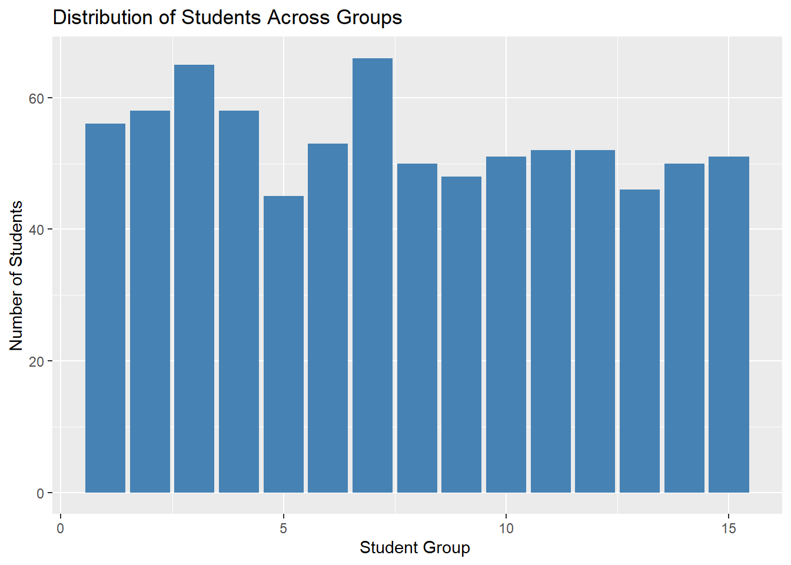
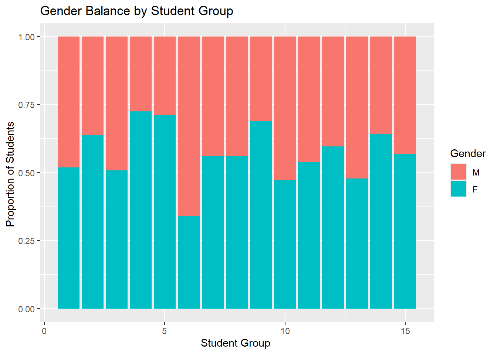
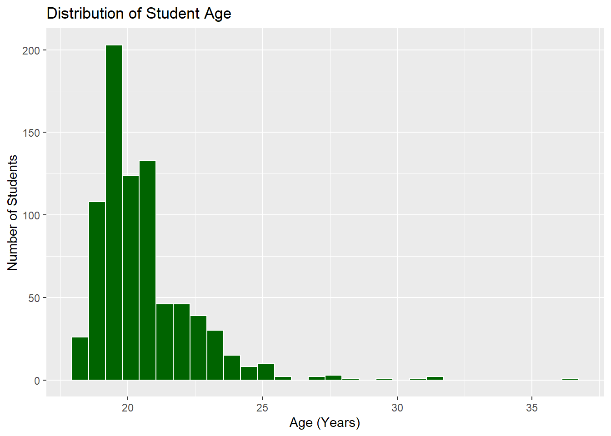
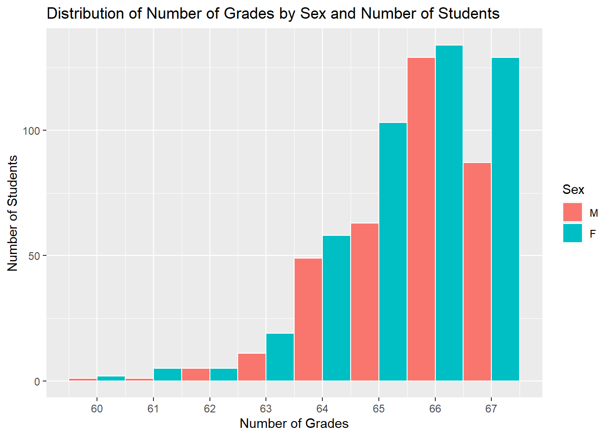
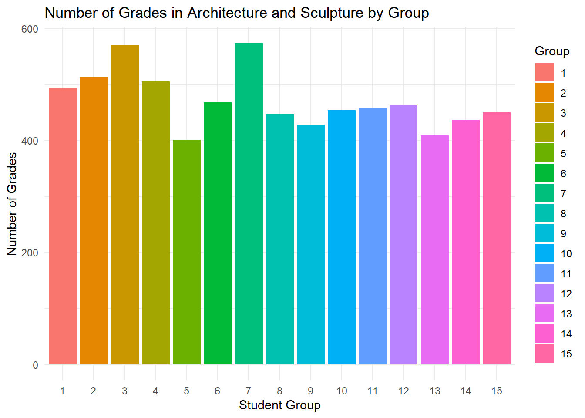
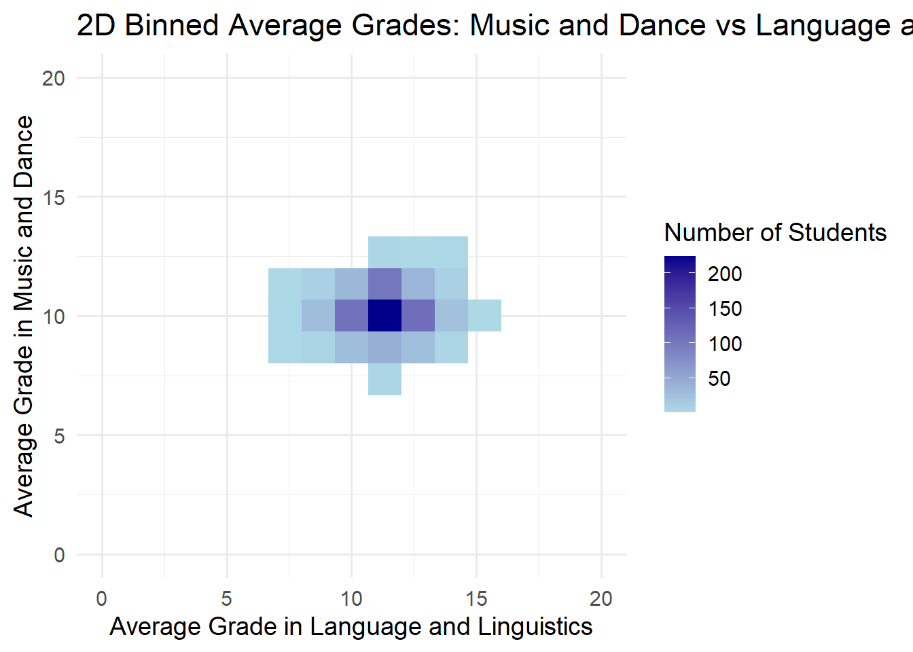

Warning: le package 'here' a été compilé avec la version R 4.3.3
here() starts at C:/Users/noemk/Desktop/QE/Data_programming/DM Noe Mansuy/grades-eval
library(ggplot2)library(vroom)library(dplyr)
Attachement du package : 'dplyr'
Les objets suivants sont masqués depuis 'package:stats':
filter, lag
Les objets suivants sont masqués depuis 'package:base':
intersect, setdiff, setequal, union
library(tidyr)here::i_am("grades-eval.Rproj")
here() starts at C:/Users/noemk/Desktop/QE/Data_programming/DM Noe Mansuy/grades-eval
Question 1
courses <-vroom(here("courses.csv"))
Rows: 10 Columns: 4
── Column specification ────────────────────────────────────────────────────────
Delimiter: ","
chr (1): course
dbl (3): course_id, module, nb_grades
ℹ Use `spec()` to retrieve the full column specification for this data.
ℹ Specify the column types or set `show_col_types = FALSE` to quiet this message.
students <-vroom(here("students.csv"),col_types =cols(id =col_integer(),group =col_integer(), birth_date =col_date(format ="%Y-%m-%d"), sex =col_factor() ))print(paste("The birth_date column of the students data frame is of class",class(students$birth_date)))
[1] "The birth_date column of the students data frame is of class Date"
print(paste("The sex column of the students data frame is of class",class(students$sex)))
[1] "The sex column of the students data frame is of class factor"
students |>ggplot(aes(x = group)) +geom_bar(fill ="steelblue") +labs(title ="Distribution of Students Across Groups",x ="Student Group ",y ="Number of Students" )

Question 6
students |>ggplot(aes(x = group, fill = sex)) +geom_bar(position ="fill") +labs(title ="Gender Balance by Student Group",x ="Student Group ",y ="Proportion of Students ",fill ="Gender" )

Question 7
library(lubridate)
Warning: le package 'lubridate' a été compilé avec la version R 4.3.3
Attachement du package : 'lubridate'
Les objets suivants sont masqués depuis 'package:base':
date, intersect, setdiff, union
students |>mutate(age_years =time_length(today() - birth_date, unit ="year") ) |>ggplot(aes(x = age_years)) +geom_histogram(fill ="darkgreen", color ="white") +labs(title ="Distribution of Student Age",x ="Age (Years)",y ="Number of Students" )
`stat_bin()` using `bins = 30`. Pick better value with `binwidth`.

Question 8
# Juste le calculmedian_age_table <- students |>group_by(group) |>mutate(age_years =time_length(today() - birth_date, unit ="year") ) |>summarize(median_age_int =floor(median(age_years, na.rm =TRUE)) )# Affichage du tableau proprementmedian_age_table |>select('Group Identifier'= group,'Median Age'= median_age_int ) |> knitr::kable()
Group Identifier
Median Age
1
20
2
20
3
20
4
19
5
19
6
20
7
20
8
20
9
20
10
19
11
19
12
20
13
19
14
19
15
19
Question 9
oldest_students <- students |>mutate(age =floor(time_length(today() - birth_date, unit ="year"))) |>group_by(group) |>slice_max(age, n =1, with_ties =FALSE) |>select(id, sex, age) |>arrange(desc(age))
Adding missing grouping variables: `group`
knitr::kable(oldest_students)
group
id
sex
age
3
19
M
36
6
174
F
31
9
169
M
31
7
539
F
29
14
604
F
28
1
142
F
27
8
284
F
27
2
493
F
25
4
584
F
25
11
436
F
25
13
737
M
25
10
205
F
24
15
154
F
24
12
496
F
23
5
103
F
22
Simple grade analysis
Question 10
The data set grades contains 51998 grades.
Question 11
grades <- grades |>mutate(course_id =as.integer(as.character(course_id)))grades <- grades |>mutate(course_id =as.integer(as.character(course_id)))combined_data <- grades |>left_join(courses, by ="course_id") |>left_join(students, by ="id")avg_grades_table <- combined_data |>filter(course =="Traditional Medicine and Herbalism") |>group_by(group) |>summarize(avg_grade =mean(grade, na.rm =TRUE) )avg_grades_table |>mutate(group =factor(as.integer(as.character(group)), ordered =TRUE)) |>ggplot(aes(x = group, y = avg_grade)) +geom_col(fill ="salmon", color ="white") +geom_hline(yintercept =mean(avg_grades_table$avg_grade, na.rm =TRUE), linetype ="dashed", color ="grey20") +scale_y_continuous(limits =c(0, 20)) +# <-- set y-axis from 0 to 20labs(title ="Average Grade in Traditional Medicine and Herbalism by Group",x ="Student Group",y ="Average Grade" )
ggplot(grades_per_student, aes(x = num_grades, fill = sex)) +geom_histogram(position ="dodge", binwidth =1, color ="white") +scale_x_continuous(breaks =0:max(grades_per_student$num_grades)) +labs(title ="Distribution of Number of Grades by Sex and Number of Students",x ="Number of Grades",y ="Number of Students",fill ="Sex" )

Question 15
grades_arch_scul <- combined_data |>filter(course =="Architecture and Sculpture") |>group_by(id, group) |># include group in groupingsummarize(num_grades =n(), .groups ="drop") # keeps group automatically# Show a small extractgrades_arch_scul |>slice_head(n =5) |> knitr::kable()
id
group
num_grades
1
12
9
2
15
9
3
14
9
4
6
9
5
7
9
Question 16
grades_distribution <- grades_arch_scul |>group_by(num_grades) |>summarize(num_students =n(), .groups ="drop")ggplot(grades_distribution, aes(x = num_grades, y = num_students)) +geom_col(fill ="steelblue", color ="white") +scale_x_continuous(breaks = grades_distribution$num_grades) +labs(title ="Distribution of Number of Grades per Student\n(Architecture and Sculpture)",x ="Number of Grades",y ="Number of Students" ) +theme_minimal()
Question 17
library(ggplot2)ggplot(grades_arch_scul, aes(x =factor(group), y = num_grades, fill =factor(group))) +geom_col() +labs(title ="Number of Grades in Architecture and Sculpture by Group",x ="Student Group",y ="Number of Grades",fill ="Group" ) +theme_minimal()

Question 18
grades_arch_scul <- grades_arch_scul |>left_join(students |>select(id, sex), by =c("id"="id"))ggplot(grades_arch_scul, aes(x =factor(group), y = num_grades, fill = sex)) +geom_col() +labs(title ="Number of Grades in Architecture and Sculpture by Group and Sex",x ="Student Group",y ="Number of Grades",fill ="Sex" )
ggplot(grades_wide, aes(x =`Language and Linguistics`,y =`Music and Dance`)) +geom_bin2d(bins =15) +scale_fill_gradient(low ="lightblue", high ="darkblue") +labs(title ="2D Binned Average Grades: Music and Dance vs Language and Linguistics",x ="Average Grade in Language and Linguistics",y ="Average Grade in Music and Dance",fill ="Number of Students" ) +scale_x_continuous(limits =c(0, 20)) +scale_y_continuous(limits =c(0, 20)) +theme_minimal(base_size =14)

Question 21
correlation_by_group <- grades_wide |>group_by(group) |>summarize(correlation =cor(`Astrology and Divination`,`Martial Arts and Self-Defense`,use ="complete.obs" ),.groups ="drop" )correlation_by_group |> knitr::kable()
group
correlation
1
-0.2424374
2
-0.3156589
3
-0.1875907
4
-0.3388490
5
-0.0200433
6
-0.1575849
7
-0.3806999
8
0.0560269
9
-0.0414124
10
-0.3445010
11
-0.1778971
12
-0.2070771
13
-0.1564394
14
-0.3860941
15
-0.1917769
Question 22
correlation_by_group <- grades_wide |>group_by(group) |>summarize(correlation =cor(`Astrology and Divination`,`Martial Arts and Self-Defense`,use ="complete.obs" ),.groups ="drop" )best_group <- correlation_by_group |>slice_max(order_by =abs(correlation), n =1) |>pull(group)grades_best_group <- grades_wide |>filter(group == best_group)ggplot(grades_best_group, aes(x =`Astrology and Divination`,y =`Martial Arts and Self-Defense`)) +geom_point(color ="steelblue", size =3, alpha =0.7) +geom_smooth(method ="lm", se =FALSE, color ="darkred", linetype ="dashed") +labs(title =paste("Grades in Astrology vs Martial Arts\n(Group", best_group, ")"),x ="Average Grade in Astrology and Divination",y ="Average Grade in Martial Arts and Self-Defense" ) +scale_x_continuous(limits =c(0, 20)) +scale_y_continuous(limits =c(0, 20)) +theme_minimal(base_size =14)
students_almost_pass <- students_pass |>filter(!pass & final_grade >=10)num_students <-nrow(students_almost_pass)cat("The number of students who do not pass but have a final grade >= 10 is", num_students, ".\n")
The number of students who do not pass but have a final grade >= 10 is 71 .